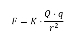

Las fuerzas de la naturaleza
La física reconoce actualmente cuatro tipos de interacciones fundamentales que explican cómo se relacionan entre sí los cuerpos y las partículas en el universo:
Interacción gravitatoria: Es una fuerza de atracción que se da entre todos los cuerpos que tienen masa. Actúa a grandes distancias y es la responsable, por ejemplo, de que la Tierra mantenga a la Luna en órbita.
Interacción electromagnética: Se manifiesta entre objetos o partículas que poseen carga eléctrica. Incluye tanto la fuerza eléctrica entre cargas en reposo como las fuerzas magnéticas que surgen entre imanes o corrientes eléctricas.
Interacción nuclear fuerte: Es la fuerza que mantiene unidos los protones y neutrones dentro del núcleo de los átomos. Aunque es extremadamente intensa (unas mil veces más fuerte que la electromagnética), solo actúa a muy corta distancia, es decir, dentro del propio núcleo.
Interacción nuclear débil: Es una fuerza que actúa también en el interior de los núcleos atómicos. Es mucho menos intensa que la electromagnética, pero más fuerte que la gravedad en distancias muy pequeñas. Participa en procesos como la desintegración radiactiva.
Actualmente, los científicos intentan formular una "teoría del todo", es decir, una teoría única que consiga unificar todas estas interacciones bajo un mismo conjunto de leyes físicas.
(Adaptado de Colegio San Francisco de Asís, s.f.)
La fuerza eléctrica
¿Qué es la electricidad estática?
La electricidad estática es un fenómeno que ocurre cuando se acumulan cargas eléctricas en la superficie de un objeto. Este fenómeno es conocido desde hace siglos y puede observarse, por ejemplo, cuando frotamos un globo contra el pelo y luego atrae pequeños trozos de papel.
Este proceso de acumulación de cargas se llama electrización y puede producirse de dos formas principales:
- Por frotamiento: ciertos materiales como el ámbar, la ebonita o el vidrio se cargan eléctricamente al frotarlos con otros como la lana, la seda o la piel.
- Por contacto: si un objeto con carga eléctrica toca otro que está neutro (sin carga), parte de la carga se transfiere al segundo objeto. Así, ambos acaban con carga del mismo tipo (positiva o negativa).
¿Qué es la carga eléctrica?
La carga eléctrica es una propiedad fundamental de la materia. Puede ser positiva o negativa. Las cargas se comportan así:
- Cargas del mismo tipo se repelen.
- Cargas de signo contrario se atraen.
- Este comportamiento es lo que origina las fuerzas eléctricas.
La carga aparece por el movimiento de electrones (partículas con carga negativa).
- Si un cuerpo pierde electrones, queda con carga positiva.
- Si gana electrones, su carga neta será negativa.
La unidad de medida de la carga eléctrica en el Sistema Internacional es el Culombio (C).
La ley de Coulomb
El científico francés Charles-Augustin de Coulomb formuló en el siglo XVIII una ley que permite calcular la fuerza entre dos cargas eléctricas.
Ley de Coulomb:
- Dos cargas eléctricas (q₁ y q₂) ejercen una fuerza de atracción o repulsión entre ellas.
- Esta fuerza es mayor cuanto mayores son las cargas y menor cuanto más lejos están.
Se expresa con esta fórmula:

F es la fuerza eléctrica de atracción o repulsión. En el S.I. se mide en Newtons (N).
Q y q son lo valores de las dos cargas puntuales. En el S.I. se miden en Culombios (C).
r es el valor de la distancia que las separa. En el S.I. se mide en metros (m).
K es una constante de proporcionalidad denominada constante de la ley de Coulomb. No se trata de una constante universal y depende del medio en el que se encuentren las cargas. Para el vacío k es aproximadamente 9·10^9 N·m^2/C^2 utilizando unidades en el S.I.
(Adaptado de Colegio San Francisco de Asís, s.f.)
La fuerza magnética
¿Qué es un imán?
Un imán es un material que tiene la capacidad de atraer ciertos metales, como el hierro o el níquel, y también puede ejercer fuerzas sobre otros imanes. Todos los imanes, sin importar su forma, presentan dos zonas donde su efecto es más fuerte, llamadas polos magnéticos.
¿Cómo se comportan los polos?
Los polos se denominan norte (N) y sur (S).
Si un imán se deja girar libremente (por ejemplo, sobre una aguja o un eje), uno de sus polos siempre apunta hacia el norte geográfico de la Tierra. Ese polo se llama norte, y el opuesto, sur.
Cuando se acercan dos imanes:
- Polos iguales se repelen (N con N, S con S).
- Polos opuestos se atraen (N con S).
¿Qué pasa si cortamos un imán?
Si partimos un imán por la mitad, no obtenemos un polo norte por un lado y un sur por otro, sino dos nuevos imanes completos, cada uno con su propio polo norte y sur.
Este fenómeno ocurre cada vez que se divide un imán: nunca se consigue un polo aislado.
Tipos de imanes
Los imanes se clasifican en dos grupos:
- Imanes permanentes: conservan sus propiedades magnéticas con el tiempo.
- Imanes temporales: solo se comportan como imanes durante un tiempo limitado, normalmente mientras están bajo la influencia de otro imán o corriente eléctrica.
El magnetismo terrestre
La Tierra actúa como un gran imán natural.
Su polo norte magnético está cerca del polo sur geográfico, y viceversa.
Este campo magnético natural interactúa con las brújulas, que son pequeños imanes que giran sobre un eje.
La aguja de la brújula se alinea con el campo terrestre y señala el norte magnético, ayudando así a la orientación.
¿Qué es un campo magnético?
Un campo magnético es el espacio que rodea a un imán en el cual se puede detectar su influencia.
En esa zona, los objetos con propiedades magnéticas o cargados eléctricamente pueden experimentar una fuerza de atracción o repulsión.
Aunque no se puede ver, el campo magnético se representa mediante líneas imaginarias que muestran la dirección y la intensidad de la fuerza magnética.
(Adaptado de Colegio San Francisco de Asís, s.f.)